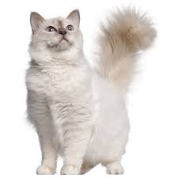

|  |
| Birmans |
BEHAVIOR
The Birman is a social, friendly family cat who can get along with kids and other pets alike. Occasionally territorial, the Birman may be less likely to let stray neighborhood cats hang around his territory. The Birman’s fun-loving personality makes him a blast to play with, and daily play can help prevent excessive weight gain.
GROOMING
The Birman’s coat is single-length with no undercoat, which makes it easy to maintain even for a long-furred cat. Twice weekly grooming usually suffices to keep the Birman’s coat mat-free. Because the Birman can be prone to extra weight gain, he should be exercised daily. The Birman is a healthy cat with a great personality, and getting a kitten from a reputable breeder can ensure that you get a cat as close to the Birman’s standard as possible.
HEALTH PROBLEMS
The Birman does not have any major breed-related health concerns. Like all cats, the Birman should have regular physical exams at the vet. Keep up with regular dental care to help prevent oral illnesses like gingivitis and dental disease and monitor your Birman’s weight to prevent obesity.
NUTRITION
The Birman is a naturally stocky cat that can easily become overweight. Like all cats, the Birman’s teeth and urinary tract can be affected by diet as well. Talk to your vet about what food is best for your kitty, as all cats are different.